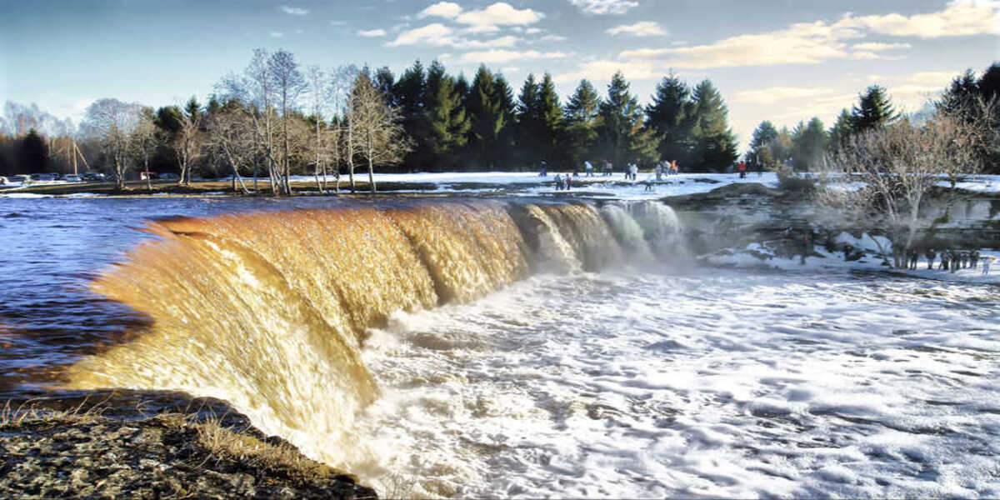
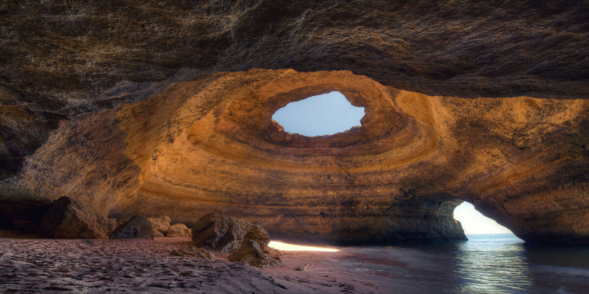
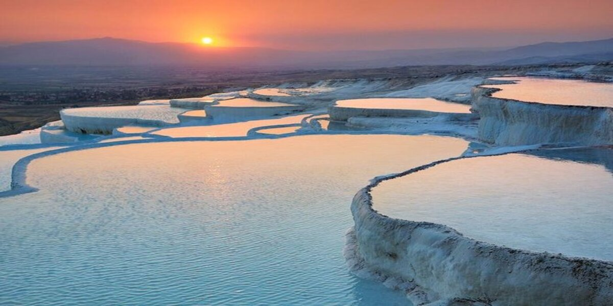
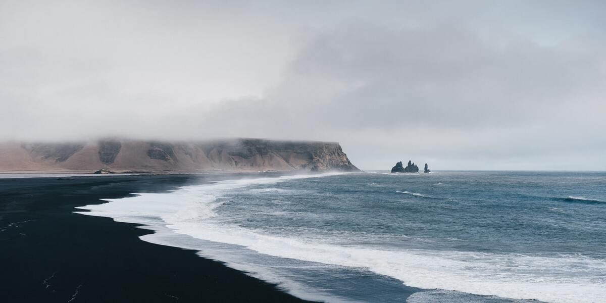

1 / 8

2 / 8

3 / 8
4 / 8

5 / 8
6 / 8
7 / 8

8 / 8

Aurore Boréale (Norvege): C'est un phénomène physique produisant dans le ciel de la lumière où la lumière produite est majoritairement verte.">
La cascade Jägala (Estonie): C'est une cascade située dans le nord de l'Estonie sur la rivière Jägala, et c'est la plus haute cascade naturelle d'Estonie avec une hauteur d'environ 8 mètres.">
La Chaussée des Géants (Irlande): C'est une formation volcanique située sur la côte d'Irlande du Nord.">
Grotte Benagil (Portugal): C'est une grotte remarquable au bord de l'océan, accessible en bateau et connue pour l'ouverture de son plafond.">
Grotte bleue (Grece): C'est une grotte au milieu de la mer. Elle est réputée pour les reflets bleu cobalt lumineux de ses parois et pour son eau claire cristalline.">
Grotte de Melissani (Grece):Une grotte de roche karstique naturelle, causées par les tremblements de terre et la dissolution du calcaire.">
Pamukkale (Turquie): Ce site, dont le nom signifie ⟪ Château de coton ⟫ en turc, ces cascades et vasques sont faites de calcaire mais ont l'apparence du coton ou d'une chute d'eau gelée.">
Reynisfjara (Islande): C'est une plage de sable noir située sur la côte sud de l'Islande.">